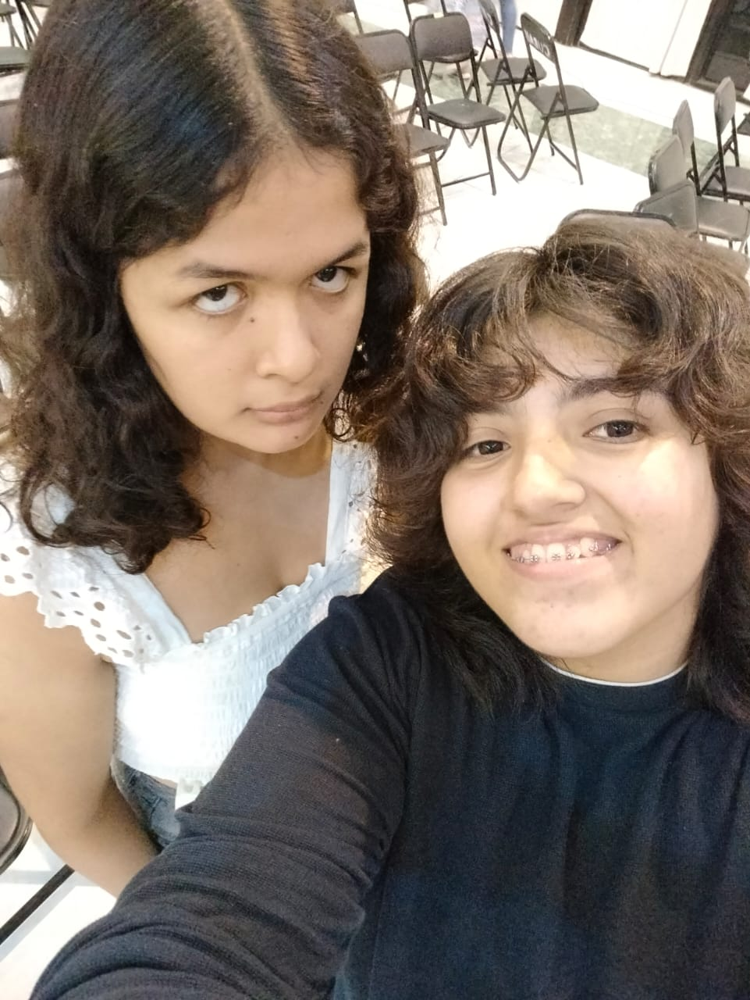

Te amo mucho mi amor,
disculpame por no poderte
mandar flores este año :(
peroooo no podia no hacer nada
y talvez no es el mejor
pero quiero que sepas
que me esforce mucho
bueno aunque chat gpt hizo
las animaciones porque sino
me toma dias hacerlo
Gracias por estos casi
5 mesesitos juntas.
Te amo muchisimo mi Rockstar
